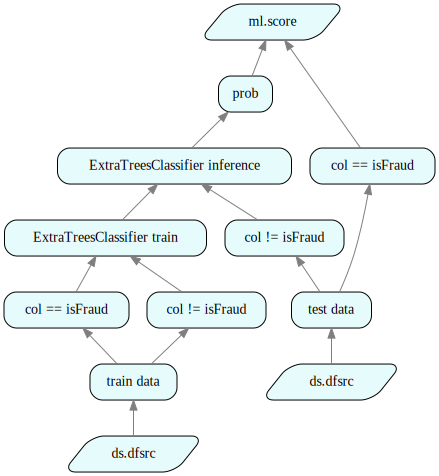
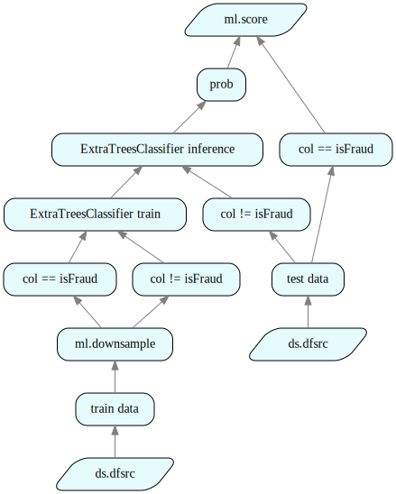
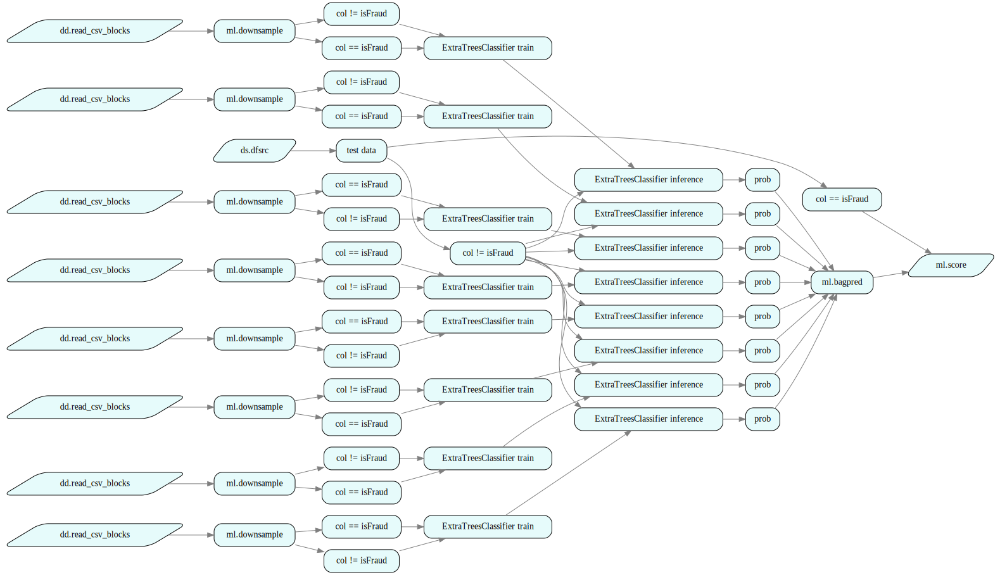
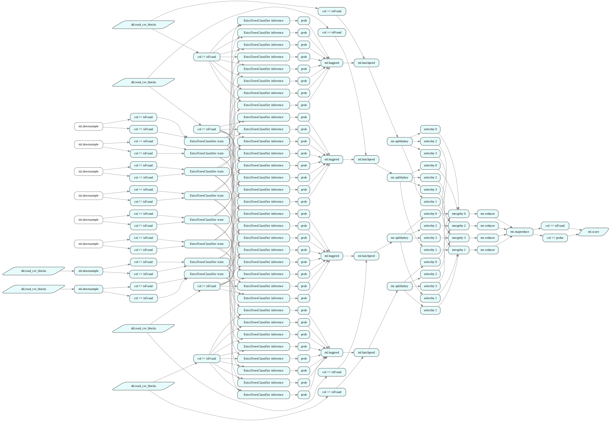
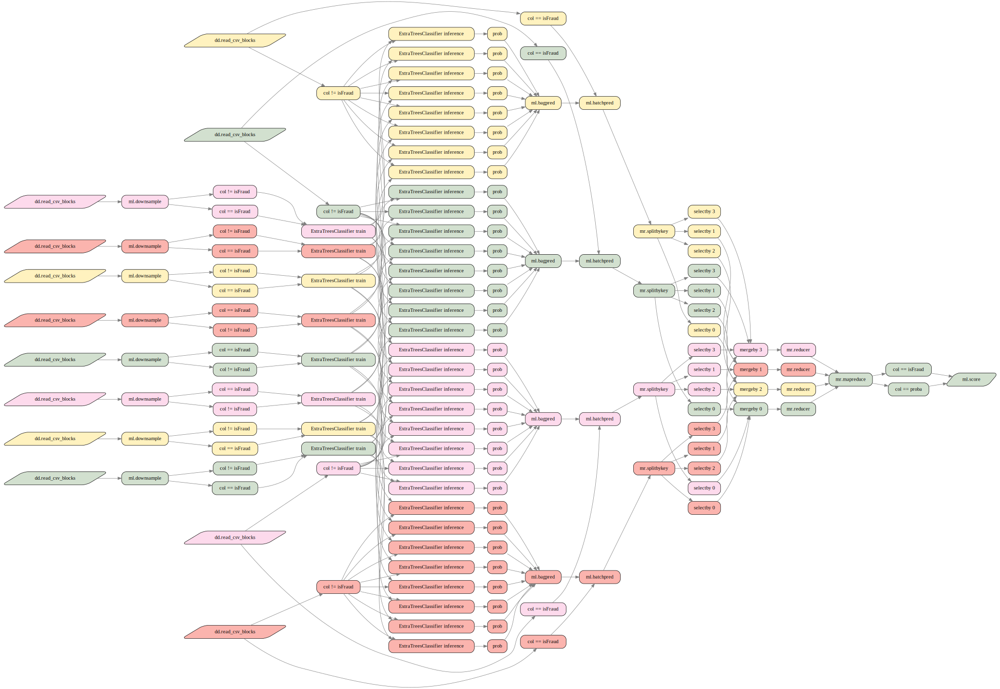
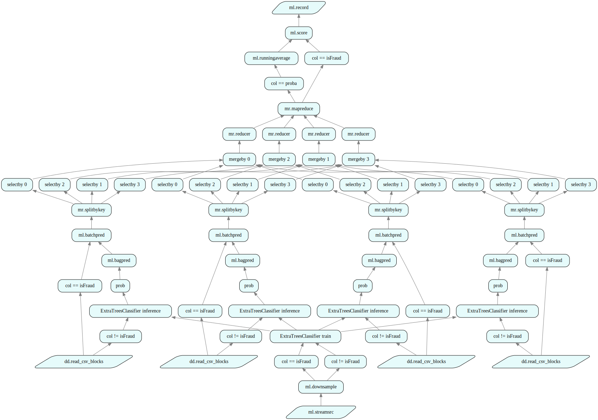
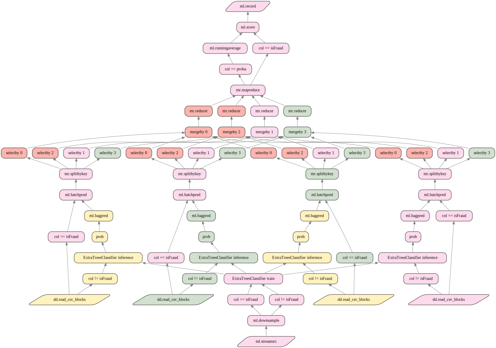

Tutorial 4: Distributed Machine Learning Pipeline
In this tutorial, we use Julius GraphEngine and its Domain Specific Language (RuleDSL) to build a distributed Machine Learning (ML) pipeline that can process a large volume of data in parallel for model training and inference.
0. Introduction
In real world ML problems, the training or inference data can be too large to fit into the memory of a single computer. It is a common challenge that ML engineers often face when productionizing a ML model. There is a popular blog post, Training models when data doesn't fit in memory, describing how to use Dask, a popular python distribution package, to build distributed ML pipelines that can process large training and inference data in batches, in order to handle data size greater than a computer's memory.
In this tutorial, we are going to replicate the functionality described in the blog post using Julius GraphEngine instead of using Dask or Dagger.jl, which is a Julia package inspired by Dask. We will show how to achieve similar or better results as in the original Dask blog with much fewer lines of code. Here, we will re-use the generic MapReduce pipeline developed in a previous tutorial. At the end of this tutorial, we will compare Julius with Dask, and summarize their key differences.
We use the same fraud detection dataset as the Dask blog, which is originated from Kaggle. The realization of fraud is indicated by the column isFraud, which is the outcome the ML model tries to predict.
1. Simple ML Pipeline
As a baseline solution, we first build a simple ML pipeline in Julius without batching or distribution. We will then describe step by step how to adapt it to support batching and distribution. This is enlightening as it matches a typical ML model development workflow, where a data scientist first build a ML model using a simple data pipeline, then a data engineer parallelizes the implementation to handle a large volume of data. To productionize a ML model, it often takes multiple iterations between data scientists and data engineers, which is one of the most time-consuming and costly step of a ML model's life cycle. By repeating the exact process in this tutorial, we illustrate how easy it is to move a ML pipeline from development to production using Julius.
In order to match the numbers in the original Dask blog, we chose to use the same Python ML models in sklearn. Julius can interop and integrate with any major programming languages such as Python, C/C++, Java, R, .Net, Julia, etc.
The fraud detection ML pipeline, as described in the Dask blog, consists of the following steps:
- read datasets,
- separate the features from target variable from the data,
- train a ML model (
ExtraTreesClassifierin the Dask blog), - infer using test data,
- compute AUC score.
We now proceed to the implementation. First, we import the required Julia and Julius packages:
using GraphEngine: RuleDSL, GraphVM
using DataFrames, DataScience, StatsBase
using AtomExtThe following are the few rules to define the entire ML pipeline, which are quite self-explanatory and roughly follow the steps mentioned above.
RuleDSL.@addrules ml begin
# selects columns `cols` from a DataFrame
select(
ref::RuleDSL.NodeRef, cols::Any;
label="$(isa(cols, InvertedIndex) ? "col != $(cols.skip)" : "col == $(cols)")"
) = begin
DataScience.ApplyFn[x::DataFrame -> DataFrames.select(x, cols; copycols=false)](ref...)
end
# any `sklearn` ML model can be easily handled by overloading the `classifiertrain`
# rule, as follows
classifiertrain(
model::Val{:ExtraTreesClassifier},
options::Dict,
trainxs::RuleDSL.NodeRef,
trainy::RuleDSL.NodeRef;
label="$model train"
) = begin
DataScience.PyTrain["sklearn.ensemble.ExtraTreesClassifier", options](trainxs..., trainy...)
end
# this rule makes the predictions
classify(
train_data::RuleDSL.NodeRef, target::Symbol, model::Val, options::Dict, testx::RuleDSL.NodeRef;
label="$model inference"
) = begin
train_data_X = RuleDSL.@ref ml.select(train_data, Not(target))
train_data_y = RuleDSL.@ref ml.select(train_data, target)
trained = RuleDSL.@ref ml.classifiertrain(model, options, train_data_X, train_data_y )
DataScience.PyPredict(trained..., testx...)
end
# makes predictions and selects the `:proba` column for the resulting DataFrame
classifyprob(
train_data::RuleDSL.NodeRef,
target::Symbol,
model::Val,
options::Dict,
test_data::RuleDSL.NodeRef;
label="prob"
) = begin
testx = RuleDSL.@ref ml.select(test_data, Not(target))
DataScience.ApplyFn[
x::DataFrame -> DataFrames.select(x, :proba; copycols=false)
](classify(train_data, target, model, options, testx))
end
# computes the AUC score
score(realized::RuleDSL.NodeRef, probs::RuleDSL.NodeRef) = begin
DataScience.PyScore(realized..., probs...)
end
endThe PyTrain, PyPredict, PyScore are three useful atoms provided by the DataScience package that wraps up the training, inference and roc_auc_score method from the sklearn Python package. The PyTrain atom is generic, it can instantiate any Python ML model using its name and parameters, as shown at the ml.classifiertrain rule. Using this set of rules, we can create a simple ML pipeline as:
# we use existing rules in ds namespace to read CSV files from a shared drive
train_data_file = joinpath(@__DIR__, "..", "data/train_fraud.csv")
test_data_file = joinpath(@__DIR__, "..", "data/test_fraud.csv")
train_data = RuleDSL.@ref ds.csvsrc(train_data_file, true; label="train data")
test_data = RuleDSL.@ref ds.csvsrc(test_data_file, true; label="test data")
target = :isFraud
model = Val(:ExtraTreesClassifier)
options = Dict(:n_estimators => 10, :min_samples_leaf => 10)
pred = RuleDSL.@ref ml.classifyprob(train_data, target, model, options, test_data)
test_data_y = RuleDSL.@ref ml.select(test_data, target)
mlscore = RuleDSL.@ref ml.score(test_data_y, pred)ml:score/ml:select/ds:csvsrc/test dataconfig = RuleDSL.Config()
gs1 = GraphVM.createlocalgraph(config, RuleDSL.GenericData())
GraphVM.calcfwd!(gs1, Set([mlscore]))0We have now created a simple ML training and inference pipeline without using batching or distribution. Julius provides an easy-to-use web UI for users to navigate and visualize the resulting data and logic in the computation graph. The following code block starts a local server for the web UI so that we can retrieve the resulting graph data.
using GraphIO
# a container of graphs
gss = Dict{String,RuleDSL.AbstractGraphState}()
# used for WebUI display purposes
port = GraphVM.drawdataport()
@async GraphVM.startresponder(gss, port);The Julius package GraphIO provides several convenience functions for retrieving and displaying graphs in SVG format. User can also view the graph data interactively by clicking on the url below to bring up the full web UI.
svg = GraphIO.postlocalgraph(gss, gs1, port; key="single");
GraphIO.postsvg(svg, "ml_pipeline_1.svg")view graph data at http://127.0.0.1:8080/depgraph.html?dataurl=127.0.0.1:7239_single

Figure 1 - Simple ML Pipeline.
Then, the AUC score value obtained using the complete dataset is:
RuleDSL.getdata(gs1, mlscore, 1)0.98825589299016341.1 Down Sampling
Downsampling is a common technique to reduce the training data size so that the training can run faster with a large amount of data. The Dask blog implemented a 5% downsampling while maintaining a constant fraction of real fraud. We replicate the same downsampling scheme using a single Julia function and a single rule in Julius:
using Random
using StatsBase
function downsample(ycol::Symbol, frac::Float64, df::DataFrame)
# get filtered DataFrames with true/false cases for isFraud
positive = DataFrames.filter(row -> isequal(row[ycol], true), df)
negative = DataFrames.filter(row -> isequal(row[ycol], false), df)
# sample without replacement each DataFrame
dspositive = positive[sample(1:nrow(positive), round(Int, frac * nrow(positive)), replace=false), :]
dsnegative = negative[sample(1:nrow(negative), round(Int, frac * nrow(negative)), replace=false), :]
# concatenate both sampled DataFrames
merged = vcat(dspositive, dsnegative)
# shuffle rows before returning
return merged[shuffle(1:nrow(merged)), :]
end
@addrules ml begin
downsample(
raw::RuleDSL.NodeRef, ycol::Symbol, frac::Float64
) = begin
DataScience.ApplyFn[downsample, ycol, frac](raw...)
end
endLet's test the downsampling:
sampleratio = 0.05
downsamples = RuleDSL.@ref ml.downsample(train_data, target, sampleratio)ml:downsample/ds:csvsrc/train datags2 = GraphVM.createlocalgraph(config, RuleDSL.GenericData())
GraphVM.calcfwd!(gs2, Set([downsamples]))
svg = GraphIO.postlocalgraph(gss, gs2, port; key="downsample");
GraphIO.postsvg(svg, "ml_pipeline_2.svg")view graph data at http://127.0.0.1:8080/depgraph.html?dataurl=127.0.0.1:7239_downsample
Figure 2 - Down Sample
We can verify that the fraud frequency remains unchanged, the minor remaining difference is due to rounding.
sample_df = RuleDSL.getdata(gs2, downsamples, 1)
sum(sample_df.isFraud) / size(sample_df, 1) * 1000.12966091705630425# use full data set to verify
using CSV
df = CSV.read(train_data_file, DataFrames.DataFrame)
sum(df.isFraud) / size(df, 1) * 1000.12828849784581414It is easy to modify the existing ML pipeline to include downsampling, we just replace the train_data with downsamples:
downproba = RuleDSL.@ref ml.classifyprob(downsamples, target, model, options, test_data)
downscore = RuleDSL.@ref ml.score(test_data_y, downproba)
gs3 = GraphVM.createlocalgraph(config, RuleDSL.GenericData())
GraphVM.calcfwd!(gs3, Set([downscore]))
svg = GraphIO.postlocalgraph(gss, gs3, port; key="downscore");
GraphIO.postsvg(svg, "ml_pipeline_3.svg")view graph data at http://127.0.0.1:8080/depgraph.html?dataurl=127.0.0.1:7239_downscore

Figure 3 - ML with Down Sample
Then, the AUC score obtained using downsampling is slightly less than training with the full data, as expected.
RuleDSL.getdata(gs3, downscore, 1)0.987927346704317We now have built the baseline ML pipeline where the entire training and inference data is processed all at once. A obvious downside of this implementation is that it can't handle large training or inference data, if they don't fit into the computer's memory. Now let's proceed to productionize the pipeline by adding batching and distribution.
2. ML Pipeline with Batching
It is a common strategy to break the training data into multiple batches and train a separate ML model for each batch. Once we have multiple trained ML models, we can average their inferences for better accuracy. This strategy of boosting accuracy from multiple trained models is commonly called "bagging". Batching and bagging are often used together to allow large training data to be split across multiple machines, and be processed in parallel.
2.1 Training Data Batching
We use a convenience type DataScience.DDataFrame provided by Julius DataScience package to create a vector of RuleDSL.NodeRef that represents roughly equal-sized chunks from the large input CSV file.
train_ddf = DataScience.DDataFrame(train_data_file, blocksize="5 MB")
train_batches = train_ddf.chunks
down_batches = RuleDSL.@ref(ml.downsample(b, target, sampleratio) for b in train_batches)8-element Vector{NodeRef}:
ml:downsample/dd:read_csv_blocks//home/runner/work/Tutorials/Tutorials/docs/../data/train_fraud.csv
ml:downsample/dd:read_csv_blocks//home/runner/work/Tutorials/Tutorials/docs/../data/train_fraud.csv
ml:downsample/dd:read_csv_blocks//home/runner/work/Tutorials/Tutorials/docs/../data/train_fraud.csv
ml:downsample/dd:read_csv_blocks//home/runner/work/Tutorials/Tutorials/docs/../data/train_fraud.csv
ml:downsample/dd:read_csv_blocks//home/runner/work/Tutorials/Tutorials/docs/../data/train_fraud.csv
ml:downsample/dd:read_csv_blocks//home/runner/work/Tutorials/Tutorials/docs/../data/train_fraud.csv
ml:downsample/dd:read_csv_blocks//home/runner/work/Tutorials/Tutorials/docs/../data/train_fraud.csv
ml:downsample/dd:read_csv_blocks//home/runner/work/Tutorials/Tutorials/docs/../data/train_fraud.csvTraining data batching and bagging can be easily implemented using the following single rule, which just re-uses the previous ml.classifyprob for each input batch and average their output.
# compute the average of multiple dataframes
function dfmean(dfs::DataFrame...)
df = reduce(.+, dfs)
df ./ (length(dfs))
end
RuleDSL.@addrules ml begin
bagpred(
test::RuleDSL.NodeRef,
model::Val,
options::Dict,
train_batches::Vector{RuleDSL.NodeRef},
target::Symbol
) = begin
refs = RuleDSL.@ref((ml.classifyprob(b, target, model, options, test) for b in train_batches))
DataScience.ApplyFn[dfmean](refs...)
end
end
bagpred = RuleDSL.@ref ml.bagpred(test_data, model, options, down_batches, target)
bagscore = RuleDSL.@ref ml.score(test_data_y, bagpred)
gs4 = GraphVM.createlocalgraph(config, RuleDSL.GenericData())
GraphVM.calcfwd!(gs4, Set([bagscore]))
svg = GraphIO.postlocalgraph(gss, gs4, port; key="ml");
GraphIO.postsvg(svg, "ml_pipeline_4.svg")view graph data at http://127.0.0.1:8080/depgraph.html?dataurl=127.0.0.1:7239_ml

Figure 4 - Batching & Bagging in Training Data
The AUC score obtained using multiple samples of the data is:
RuleDSL.getdata(gs4, bagscore, 1)0.98149054206366692.2 Batching both Training and Prediction Data
In the previous implementation, the training data is batched but not the inference data. In practice, the inference data could also be too large to fit into the memory of a single machine. In that case, we will also need to batch the inference data. It is a much more complex pipeline to batch both training and inference data. However, in Julius, we can leverage the generic MapReduce pattern to easily define this complicated pipeline with very little coding.
We first use DataScience.DDataFrame to create a vector of NodeRef.RuleDSL for the inference data.
test_ddf = DataScience.DDataFrame(test_data_file, blocksize="3.5 MB")
test_batches = test_ddf.chunks3-element Vector{NodeRef}:
dd:read_csv_blocks//home/runner/work/Tutorials/Tutorials/docs/../data/test_fraud.csv
dd:read_csv_blocks//home/runner/work/Tutorials/Tutorials/docs/../data/test_fraud.csv
dd:read_csv_blocks//home/runner/work/Tutorials/Tutorials/docs/../data/test_fraud.csvThe doubly batched training and inference ML pipeline naturally maps to a MapReduce pipeline as following:
- mapper: compute the bagged inference of a single test batch from multiple trained models, this stage already includes training data batching,
- shuffler/reducer: move the individual batch inference and concatenate them to form the entire inference.
The following batchpred rule extracts the realization and inference from the same test batch file in a DataFrame, and assign a unique key using the hash of the batch file's NodeRef.
RuleDSL.@addrules ml begin
# extract both realization and prob predictions
batchpred(
test::RuleDSL.NodeRef,
model::Val,
options::Dict,
train_batches::Vector{RuleDSL.NodeRef},
target::Symbol
) = begin
DataScience.ApplyFn[
(ind, prob)->[hash(test) => hcat(ind, prob)]
](select(test, target), bagpred(test, model, options, train_batches, target))
end
end
# extracts the DataFrames from `batchpred` from all batches and concatenates them
function valcat(xs::Vector...)
agg = DataFrame()
for (_, v) in vcat(xs...)
agg = vcat(agg, v)
end
return agg
endvalcat (generic function with 1 method)The following is the entire definintion of the doubly batched ML pipeline using the MapReduce pattern:
mapper = RuleDSL.@ref ml.batchpred(model, options, down_batches, target)
# map all batches to 3 pipelines before reducing
shuffler = RuleDSL.@ref mr.shuffler(first, 3)
# simply concatenates all the vectors in a given pipeline
reducer = RuleDSL.@ref mr.reducer(vcat)
# valcat extracts the DataFrame from each batch, and concatenate them together
mrpred = RuleDSL.@ref mr.mapreduce(test_batches, mapper, shuffler, reducer, valcat)mr:mapreduce/NodeRef[3]The last step in MapReduce is to aggregate the results from the mapper/shuffler results of individual test batches. The generic mr.mapreduce rule can take an optional function as the last parameter to customize this aggregation. The function valcat is used for the aggregation, which concatenates individual batchs' fraud realization and inference into a single DataFrame.
mrscore = RuleDSL.@ref ml.score(RuleDSL.@ref(ml.select(mrpred, :isFraud)), RuleDSL.@ref(ml.select(mrpred, :proba)))
gs5 = GraphVM.createlocalgraph(config, RuleDSL.GenericData())
GraphVM.calcfwd!(gs5, Set([mrscore]))
svg = GraphIO.postlocalgraph(gss, gs5, port; key="mapred");
GraphIO.postsvg(svg, "ml_pipeline_5.svg")view graph data at http://127.0.0.1:8080/depgraph.html?dataurl=127.0.0.1:7239_mapred

Figure 5 - Doubly Batching in Training and Inference
The corresponding AUC score from the doubly batched pipeline is similar:
RuleDSL.getdata(gs5, mrscore, 1)0.97710665405408653. Distributed ML Pipeline
We have now adapted the simple ML pipeline to support doubly data batching in both training and inference. However, the real benefits of batching only comes from distributing the data and computation to multiple computers, so that we can process large volume of data and computation in parallel.
Using Julius, it is effortless to distribute the batched pipeline to multiple computers and run it in parallel. Let's use the doubly batched ML pipeline as an example to show how easy it is to distribute. We first connect to a remote cluster with 3 worker instances, and import necessary packages on the remote cluster:
using GraphEngine: RuleDSL, GraphVM
config = RuleDSL.newconfig(RuleDSL.Config(), :project => "MapReduce")
balancer = GraphVM.GlobalUnique()
my_domain = GraphVM.mydomain()
# draw a port number to start the local cluster esrvice
remoteport = GraphVM.drawdataport()7710# start a local master service at the given port, which mimic the effects of a remote cluster
gs0 = GraphVM.RemoteGraphProxy(my_domain => 7225)
GraphVM.rpccall(gs0, :startlocalmasterservice, remoteport, 3)
gs = GraphVM.RemoteGraphProxy(config, my_domain => remoteport, balancer, GraphVM.GenericData())
GraphVM.wait4clusterinit(gs)Dict{UInt64, Pair{Float64, GraphEngine.GraphVM.WorkerStatus}} with 3 entries:
0x5b7cf1e95a1440b4 => 1.64847e9=>Ready
0x6ed3384700c094c3 => 1.64847e9=>Ready
0x860c4a99af328894 => 1.64847e9=>ReadyGraphVM.@remote_eval gs begin
using GraphEngine: RuleDSL, GraphVM
using DataScience, Random, AtomExt, GraphIO
using StatsBase, DataFrames
end
GraphVM.waitcheckstatus(gs, RuleDSL.getconfig(config, :project));We now load the entire doubly batched ML pipeline to the remote cluster, by sending the entire code we have written so far to the remote cluster. The following is the full list of code to replicate the Dask blog in Julius. There are only 8 rules, and about 50 lines of code in total.
GraphVM.@remote_eval gs begin
function downsample(ycol::Symbol, frac::Float64, df::DataFrame)
positive = DataFrames.filter(row -> isequal(row[ycol], true), df)
negative = DataFrames.filter(row -> isequal(row[ycol], false), df)
dspositive = positive[sample(1:nrow(positive), round(Int, frac * nrow(positive)), replace=false), :]
dsnegative = negative[sample(1:nrow(negative), round(Int, frac * nrow(negative)), replace=false), :]
merged = vcat(dspositive, dsnegative)
return merged[shuffle(1:nrow(merged)), :]
end
function dfmean(dfs::DataFrame...)
df = reduce(.+, dfs)
return df ./ (length(dfs))
end
function valcat(xs::Vector...)
agg = DataFrame()
for (_, v) in vcat(xs...)
agg = vcat(agg, v)
end
return agg
end
end
GraphVM.waitcheckstatus(gs, RuleDSL.getconfig(config, :project));
GraphVM.@addrules gs ml begin
select(ref::RuleDSL.NodeRef, cols::Any; label="$(isa(cols, InvertedIndex) ? "col != $(cols.skip)" : "col == $(cols)")") = DataScience.ApplyFn[x::DataFrame->DataFrames.select(x, cols; copycols=false)](ref...)
classifiertrain(model::Val{:ExtraTreesClassifier}, options::Dict, trainxs::RuleDSL.NodeRef, trainy::RuleDSL.NodeRef; label="$model train") = DataScience.PyTrain["sklearn.ensemble.ExtraTreesClassifier", options](trainxs..., trainy...)
classify(train_data::RuleDSL.NodeRef, target::Symbol, model::Val, options::Dict, testx::RuleDSL.NodeRef; label="$model inference") = begin
train_data_X = RuleDSL.@ref ml.select(train_data, Not(target))
train_data_y = RuleDSL.@ref ml.select(train_data, target)
trained = RuleDSL.@ref ml.classifiertrain(model, options, train_data_X, train_data_y )
DataScience.PyPredict(trained..., testx...)
end
classifyprob(train_data::RuleDSL.NodeRef, target::Symbol, model::Val, options::Dict, test_data::RuleDSL.NodeRef; label="prob") = begin
testx = RuleDSL.@ref ml.select(test_data, Not(target))
DataScience.ApplyFn[x::DataFrame->DataFrames.select(x, :proba; copycols=false)](classify(train_data, target, model, options, testx))
end
score(realized::RuleDSL.NodeRef, probs::RuleDSL.NodeRef)=DataScience.PyScore(realized..., probs...)
downsample(raw::RuleDSL.NodeRef, ycol::Symbol, frac::Float64)=DataScience.ApplyFn[Main.downsample, ycol, frac](raw...)
bagpred(test::RuleDSL.NodeRef, model::Val, options::Dict, train_batches::Vector{RuleDSL.NodeRef}, target::Symbol) = DataScience.ApplyFn[Main.dfmean](RuleDSL.@ref((ml.classifyprob(b, target, model, options, test) for b = train_batches))...)
batchpred(test::RuleDSL.NodeRef, model::Val, options::Dict, train_batches::Vector{RuleDSL.NodeRef}, target::Symbol) = DataScience.ApplyFn[(ind, prob)->[hash(test) => hcat(ind, prob)]](select(test, target), bagpred(test, model, options, train_batches, target))
end
GraphVM.waitcheckstatus(gs, RuleDSL.getconfig(config, :project));Afterwards, we can create and run the doubly batched pipeline on the cluster.
mrpred = RuleDSL.@ref mr.mapreduce(test_batches, mapper, shuffler, reducer, Main.valcat)
mrscore = RuleDSL.@ref ml.score(RuleDSL.@ref(ml.select(mrpred, :isFraud)), RuleDSL.@ref(ml.select(mrpred, :proba)))
# select all the nodes with rule name classifiertrain, splitbykey and reducer in alljobs
keyjobs, ds = RuleDSL.jobdeps(config, [mrscore], Set([:classifiertrain, :splitbykey, :reducer]));
GraphVM.initgraph!(gs)
# distribute the nodes in alljobs to workers
GraphVM.dispatchjobs!(gs, keyjobs, 1)
GraphVM.waitcheckstatus(gs, RuleDSL.getconfig(config, :project));In the code block above, we first find the keyjobs, which is a vector of NodeRef that holds all the nodes in the graph that are associated with rule name classifertrain, splitbykey and reducer. These nodes are the main points of computation and data aggregations. A developer can use his domain knowledge about the specific workload in selecting the best set of rule names for the key jobs. The last key job is always the final node that user want to compute, which is mrscore in the cell above. Once the key jobs are determined, we send them to the workers by calling GraphVM.dispatchjobs!, whose 3rd parameter specifies the number of threads worker shall run to process these jobs concurrently.
The way Julius distribute the jobs to workers is fundamentally different from Dask or Dagger.jl distribution. In Dask or Dagger.jl, every node in their graph represents a separate task that must be sent to a worker for execution individually. In Julius, since every worker holds the entire graph logic as specified by the set of rules in RuleDSL, the dispatcher does not need to send every node to the worker, instead only few key jobs are sent in the format of NodeRef object. Once a worker receives a job definition in NodeRef, it can create any dependent nodes from the common set of rules shared by all workers and the dispatcher. As a result, Julius distribution requires much less communication between the dispathcer and the workers, thus incurring much less overhead.
The following cell shows that only 15 nodes need to be sent to the workers instead of all 125 nodes in the graph.
gstats = GraphVM.rpccall(gs, GraphIO.graphstats, UInt(1), UInt(1))
println("length of keyjobs = ", length(keyjobs))
println("graph node cnt = ", gstats[:cnt])length of keyjobs = 15
graph node cnt = 125
By creating dependent nodes at worker, Julius also achieves much better locality for graph execution, as all the dependent nodes created by the worker are local. Therefore Julius graph distribution and execution are much more efficient than Dask or Dagger.jl. Julius can easily distribute graphs as large as hundreds of millions of nodes, and even in these cases, the number of keyjobs to distribute is rarely more than a few thousands. In comparison, Dask or Dagger.jl suffer from huge overhead when dealing with large graphs because of the need to distribute every node. As a result, developers are advised to "avoid large graphs" when using Dask, Julius does not have such limitations on large graphs.
svg = GraphIO.postremotegraph(gs, remoteport);
GraphIO.postsvg(svg, "ml_pipeline_6.svg")
Figure 6 - Distributed ML Pipeline.
Data from the remote cluster are easily accessible using Julius' remote RPC interface.
GraphVM.rpccall(gs, :onnode, :getdata, UInt[0], hash(mrscore), 1)0.9697909078884458The resulting graph uses different colors to indicate the placement of nodes to individual workers instance, where a single color represent a given physical worker instance. There is a network data transfer for every arrow connecting two nodes of different colors. The entire graph distribution is handled by Julius automatically without the need for the developer to change a single line of code.
Upon close examination, we observe that the resulting MapReduce distribution is optimal in that the work load is evenly distributed amongst 3 workers, and there is no unnecessary data transfer between different physical computers (represented by different colors) at all in the resulting graph distribution.
Neither training nor inference input data were ever aggregated onto a single computer, so that we can stay within individual worker's memory limit. Only the realization and inference outputs were aggregated to a single machine, which are only two columns of data, a tiny fraction comparing to the entire inference input data set.
4. Streaming
Besides batching, streaming is another effective strategy to minimize memory usage. Instead of processing the entire data set at once, we could break it into multiple batches and process them sequentially in time. Streaming was not implemented in the original Dask blog, as the DAG created by Dask does not support streaming use case.
In contrast, any pipeline created in Julius can be easily run in streaming mode with one line of code change. In the streaming mode, the RuleDSL.fwddata! method will be called multiple times with different streaming values. Therefore, we can easily implement a few Atom types that act as the the source, running average and cumulator, so that we can express rich logic and behaviors in stream processing. These atoms are generic, they can be readily re-used in other streaming use cases.
# records the streaming value x
RuleDSL.@datom Record begin
values::Vector = []
function fwddata!(x::Any)
push!(values, x)
end
end
# computes the running average of all the value being streamed
RuleDSL.@datom RunningAverage begin
sum::DataFrame = DataFrame()
cnt::Vector = [0]
function fwddata!(x::DataFrame)
if cnt[1] == 0
append!(sum, x)
else
sum .+= x
end
cnt[1] += 1
[ sum ./ cnt[1] ]
end
end
# sequentially return values as represented in batchsrc, for each fwddata! call
# this only work for a source node, i.e., NodeRef without any further dependencies
RuleDSL.@datom StreamSrc begin
config::RuleDSL.Config
batchsrc::Vector{RuleDSL.NodeRef}
idx::Vector = [0]
function fwddata!()
thissrc = batchsrc[idx[1] % length(batchsrc) + 1]
atom = RuleDSL.calcop(config, thissrc)
idx[1] += 1
RuleDSL.fwddata!(atom)
end
endfwddata! (generic function with 93 methods)We then add a few generic high level rules to connect these Atoms for streaming source, running average and cumulator:
RuleDSL.@addrules ml begin
streamsrc(refs::Vector{RuleDSL.NodeRef}) = StreamSrc[RuleDSL.@config, refs]()
runningaverage(ref::RuleDSL.NodeRef) = RunningAverage(ref...)
record(ref::RuleDSL.NodeRef) = Record(ref...)
endYou might be curious of how the ML performance improves as more training data is added in the bagging process. The following is a streaming pipeline that can answer this kind of questions. The streaming ML pipeline receives individual training data: for each of which a new ML model is trained, then its inference is used to compute a running average of model inferences. The ML scores computed from the running average inference are then recorded, which shows how AUC score improves with more training data.
stream_ddf = DataScience.DDataFrame(train_data_file, blocksize="2 MB")
stream_batches = stream_ddf.chunks
stream_src = RuleDSL.@ref ml.streamsrc(stream_batches)
down_stream = RuleDSL.@ref ml.downsample(stream_src, target, sampleratio)
# change the mapper to use the streaming data source for training
streammapper = RuleDSL.@ref ml.batchpred(model, options, [down_stream], target)
# the shuffler/reducer remains the same as before
shuffler = RuleDSL.@ref mr.shuffler(first, 3)
reducer = RuleDSL.@ref mr.reducer(vcat)
streampred = RuleDSL.@ref mr.mapreduce(test_batches, streammapper, shuffler, reducer, valcat)
# we use the running average to compute the ML score
streamprob = RuleDSL.@ref ml.select(streampred, :proba)
streamprobavg = RuleDSL.@ref ml.runningaverage(streamprob)
streamscore = RuleDSL.@ref ml.score(RuleDSL.@ref(ml.select(streampred, :isFraud)), streamprobavg)
# finally we record all the ML score history
streamrecord = RuleDSL.@ref ml.record(streamscore)ml:record/ml:score/ml:select/mr:mapreduce/NodeRef[3]# create a local graph with the default pipeline
gs7 = RuleDSL.createlocalgraph(config, RuleDSL.GenericData(), Set([streamrecord]));
# this single line of code turns the regular batch pipeline into a streaming pipeline,
# by specifying the source and sink of the stream processing
RuleDSL.initstream!(gs7, Set(hash(stream_src)), Set(hash(streamrecord)));svg = GraphIO.postlocalgraph(gss, gs7, port, true; key="stream");
GraphIO.postsvg(svg, "ml_pipeline_7.svg")view graph data at http://127.0.0.1:8080/depgraph.html?dataurl=127.0.0.1:7239_stream

Figure 7 - Local Streaming.
# stream all the training batches data through
RuleDSL.pushpullcalc!(gs7, length(stream_batches))
# stop any further streaming, and persist the state
RuleDSL.stopstream!(gs7);The recorded history of ML score clearly shows the improvements in model inference, it is quite interesting to see how much the quality of inference improves with more training data.
GraphVM.getdata(gs7, hash(streamrecord))20-element Vector{Any}:
0.7968585598052131
0.9593462085819503
0.9691530658012474
0.9657251446737141
0.9660233866688851
0.9707457740736911
0.9690062984212916
0.979226478999267
0.981011528183084
0.9811345486150143
0.982567000116908
0.9808796319194953
0.9818525542161091
0.9833131086150741
0.9824233708937922
0.9820369560590595
0.9841064533994013
0.9830938591797551
0.9839590771233424
0.9846265209287896Julius streaming is fully pipelined, in that each node in the graph processes a different input data batch simultaneously, which is a lot faster than the mini-batching approach in Spark. Julius streaming also works for distributed graphs across multiple computers, again without any code changes following a similar API as the local streaming case.
gs = GraphVM.RemoteGraphProxy(config, my_domain => remoteport, balancer, GraphVM.GenericData())
GraphVM.rpccall(gs, GraphVM.workerstatus)Dict{UInt64, Pair{Float64, GraphEngine.GraphVM.WorkerStatus}} with 3 entries:
0x5b7cf1e95a1440b4 => 1.64847e9=>Ready
0x6ed3384700c094c3 => 1.64847e9=>Ready
0x860c4a99af328894 => 1.64847e9=>ReadyGraphVM.@remote_eval gs begin
RuleDSL.@datom Record begin
values::Vector = []
function fwddata!(x::Any)
push!(values, x)
end
end
RuleDSL.@datom RunningAverage begin
sum::DataFrame = DataFrame()
cnt::Vector = [0]
function fwddata!(x::DataFrame)
if cnt[1] == 0
append!(sum, x)
else
sum .+= x
end
cnt[1] += 1
[ sum ./ cnt[1] ]
end
end
RuleDSL.@datom StreamSrc begin
config::RuleDSL.Config
batchsrc::Vector{RuleDSL.NodeRef}
idx::Vector = [0]
function fwddata!()
thissrc = batchsrc[idx[1] % length(batchsrc) + 1]
atom = RuleDSL.calcop(config, thissrc)
idx[1] += 1
RuleDSL.fwddata!(atom)
end
end
end
GraphVM.waitcheckstatus(gs, RuleDSL.getconfig(config, :project));
GraphVM.@addrules gs ml begin
streamsrc(refs::Vector{RuleDSL.NodeRef})=StreamSrc[@config, refs]()
runningaverage(ref::RuleDSL.NodeRef)=RunningAverage(ref...)
record(ref::RuleDSL.NodeRef)=Record(ref...)
endGraphVM.waitcheckstatus(gs, RuleDSL.getconfig(config, :project));
streampred = RuleDSL.@ref mr.mapreduce(test_batches, streammapper, shuffler, reducer, Main.valcat)
streamprob = RuleDSL.@ref ml.select(streampred, :proba)
streamprobavg = RuleDSL.@ref ml.runningaverage(streamprob)
streamscore = RuleDSL.@ref ml.score(RuleDSL.@ref(ml.select(streampred, :isFraud)), streamprobavg)
streamrecord = RuleDSL.@ref ml.record(streamscore)
# create a regular batch piepline
GraphVM.createremotegraph(gs, Set([streamrecord]), Set([:bagpred, :splitby, :reducer]))
# turns it into streaming mode by specifying data source and sink
GraphVM.initstream!(gs, UInt(0), Set(hash(stream_src)), Set(hash(streamrecord)))
# stream data through
RuleDSL.pushpullcalc!(gs, Set(UInt(0)), length(stream_batches))
GraphVM.waitcheckstatus(gs, RuleDSL.getconfig(config, :project));
# finalize, no longer accept future streaming data
RuleDSL.stopstream!(gs);
svg = GraphIO.postremotegraph(gs, remoteport, true);
GraphIO.postsvg(svg, "ml_pipeline_8.svg")
Figure 6 - Distributed Streaming.
We can retrieve the distributed streaming results:
GraphVM.rpccall(gs, :onnode, :getdata, UInt[0], hash(streamrecord))20-element Vector{Any}:
0.744555251045053
0.8233723083045184
0.9252395256755561
0.9387466210950088
0.9484878814687249
0.9554575872950923
0.9637295579526703
0.9672698204112465
0.9687484075024992
0.9670127023221238
0.972477474591234
0.968418596586285
0.9747206712545583
0.9737553367401539
0.9778291795377934
0.9761153477789719
0.9778822940132587
0.9757316729767038
0.9758555130764653
0.9745267612647652GraphVM.rpccall(gs, :endcluster)05. Conclusions
This tutorial shows how to adapt a simple ML pipeline for batching and distribution using Julius step by step. It only takes two additional rules ml.bagpred, ml.batchpred and one additional function valcat to turn a simple ML pipeline into a doubly batched and fully distributed ML pipeline. This is astonishing, if you consider the fact the resulting doubly batched pipeline is quite complex with 125 nodes, a big increase from the 13 nodes in the original simple ML pipeline.
We have explained in section 3 that Julius graph distribution and execution is much more efficient than Dask or Dagger.jl, as Julius only needs to communicate a few key jobs to the worker, and the resulting graph distribution has much better locality. Julius can achieve such efficiency in distribution thanks to the use of RuleDSL, which is a low-code representation of the entire graph logic shared among both the dispather and the workers, allowing workers to create any necessary dependent nodes from the key jobs.
The low-code RuleDSL is a huge advantage of Julius. The original solution in the Dask blog requires a significant amout of coding. Low code does not mean less power or flexiblity. The high order rules in Julius is extremely powerful and expressive. For example, the doubly batched pipeline can be quite easily constructed using the existing generic mr.mapreduce rule.
Furthermore, Julius' web UI offers much easier and more intuitive visualization and navigation of data, logic and distribution in the distributed graph, with every intermediate results full visible to the user. In comparison, it is quite difficult to access intermediate data and distribution results from Dask, as individual tasks in Dask are transient, their states are not persisted. Yes, one can manually record and persist intermediate results from Dask, but that requires additional coding and efforts.
Julius is also flexible in running the ML pipeline in batch, streaming or distributed modes. Distributed streaming is also supported without code changes. Dask, on the other hand, only support batch processing, but not streaming use cases.
Last but not the least, Julius' auto-scaling capability fully automates the productionization process of ML models, making it effortless to move a model from development to production. This tutorial showed that Julius can distribute the execution of any application written in Julius RuleDSL automatically and optimally over multiple computers without any code changes. In comparison, to move a non-trivial Python application to Dask distribution, developers have to modify the code base heavily and manually using Dask API, then they have to go through extensive testing and performance tuning, as shown in the original Dask blog.
Thinking of migrating your python application to Dask? You will get better return on your time and efforts by learning Julius instead.
This page was generated using Literate.jl.